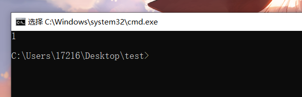

bat脚本使用小tips
使用bat脚本时的一些小tips
1.echo off的作用
参考这个，讲的很详细bat文件的@echo off是什么作用？_
简单来讲就是，echo是回显的作用，会显示这条命令后的内容，而echo off就是关闭回显，但是不包括这条命令，@echo off就是关闭回显且包括这条命令
2.在bat里调用其它bat
两种方式，一种是call，在本bat窗口调用，另一种是start，会另开一个窗口
这里以一个情景为例，在Desktop文件夹里我创建了test.bat文件，想要调用Desktop\test文件夹下三个bat文件，分别为1.bat,2.bat,3.bat，三个文件内容相同均为：
1 | @echo off |
由于没有加入pause，脚本会在迅速执行后自动关闭窗口
那么我在test.bat文件中写入
1 | @echo off |
期望的效果是，分别调用三个窗口，执行后自动关闭窗口，但是实际的效果是留下了三个窗口，如图
要想自动关闭这个窗口，在三个文件结尾加入exit即可。
1 | @echo off |
另外，如果是一直执行的脚本，不能exit，但我们又不想手动去最小化每个窗口，那么，只要在test.bat的start后加入参数”/min”即可
1 | @echo off |
这样就会在启动新窗口时自动最小化了。其它可用的参数如下：
1 | “title” 指定在“命令提示符”窗口标题栏中显示的标题。 |